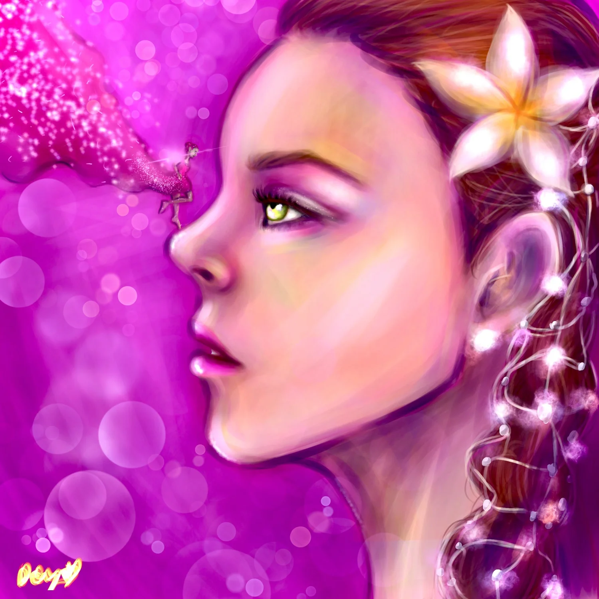
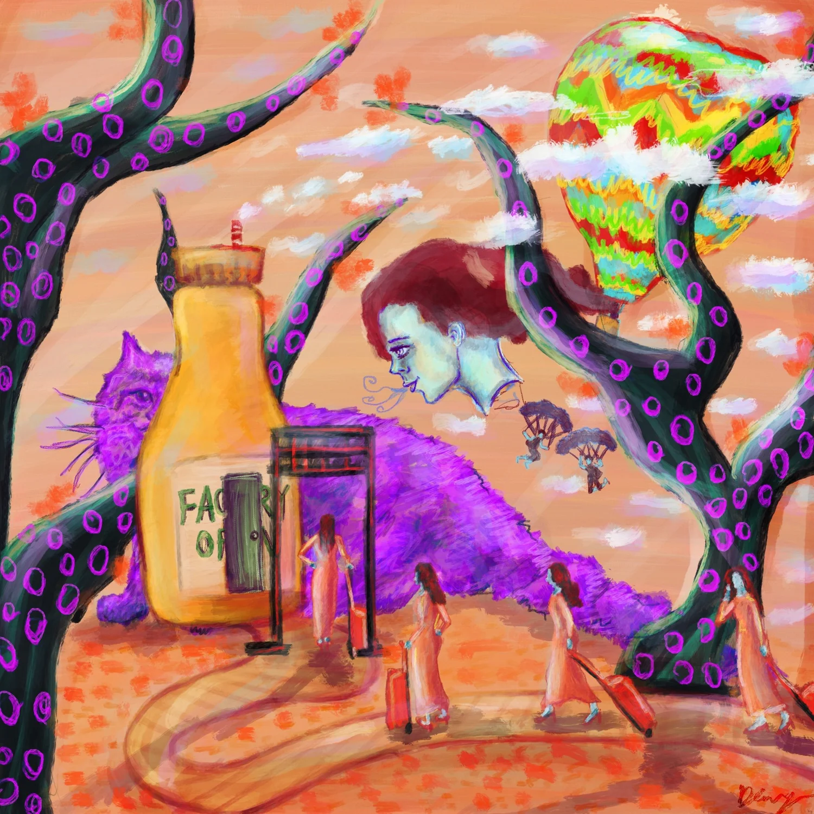
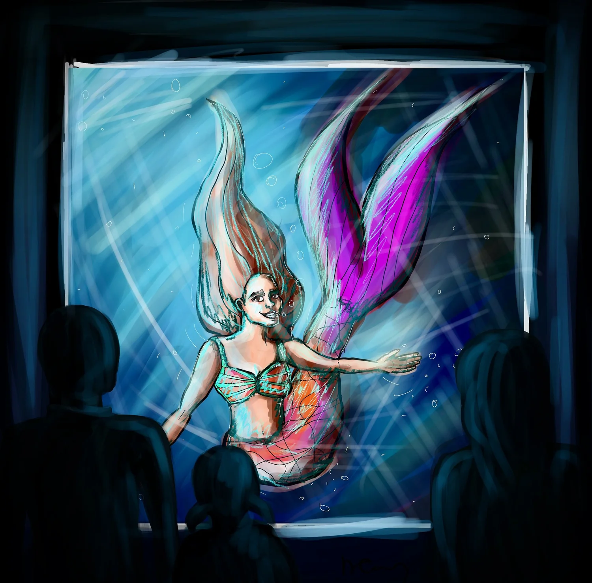
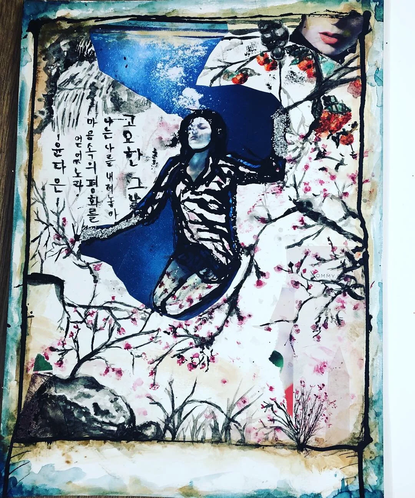
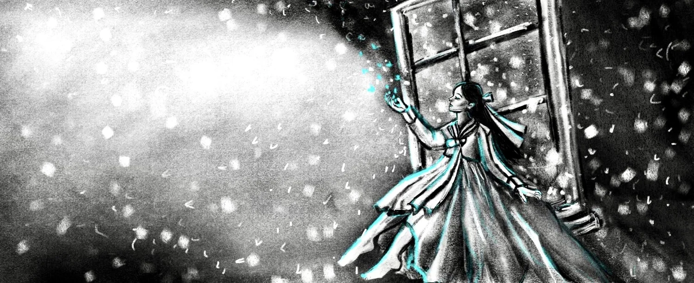
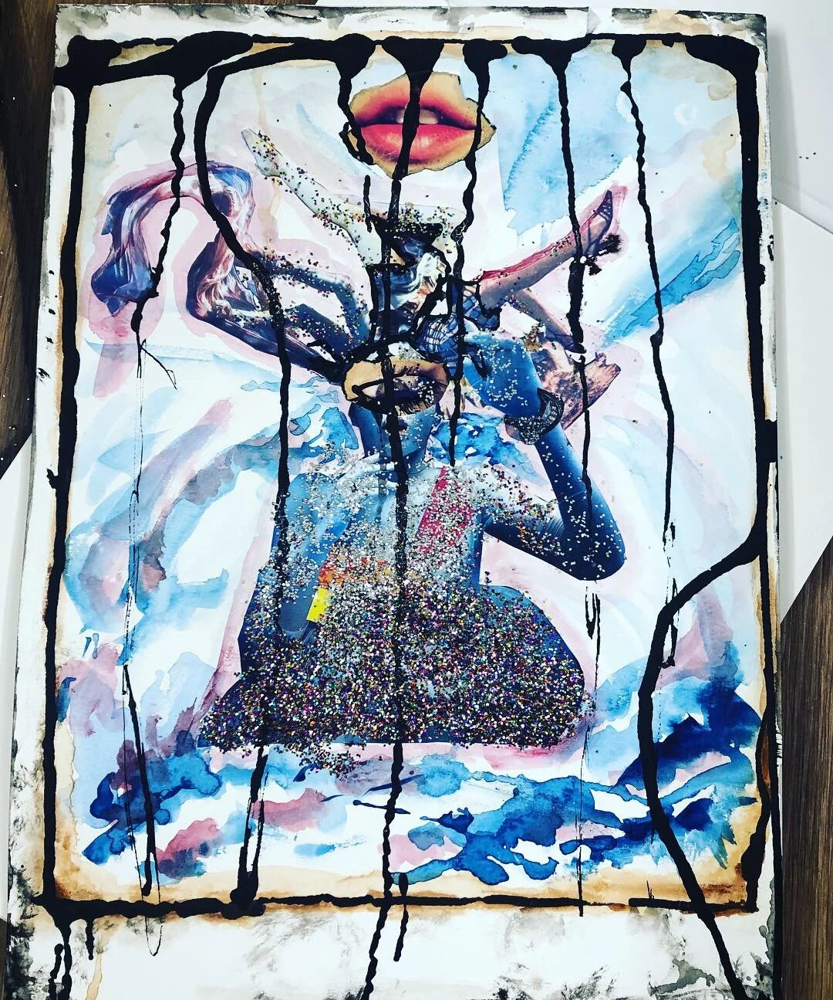
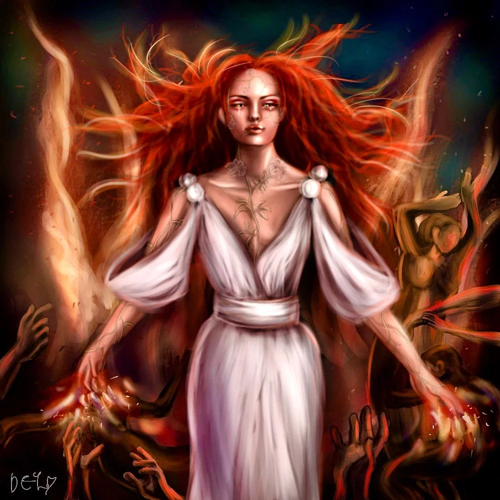
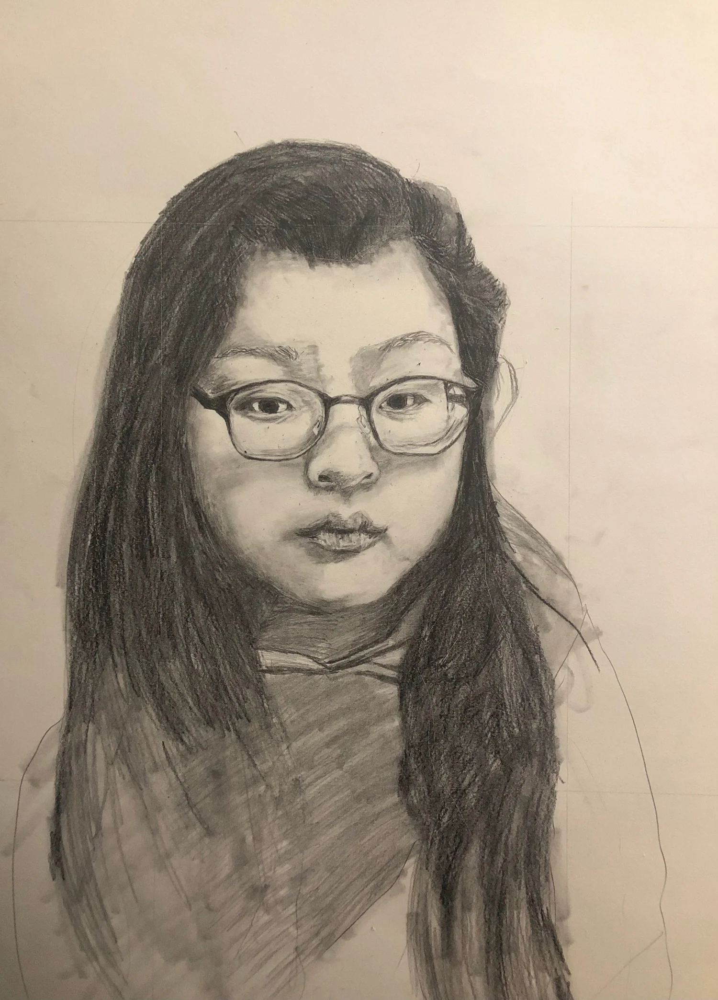
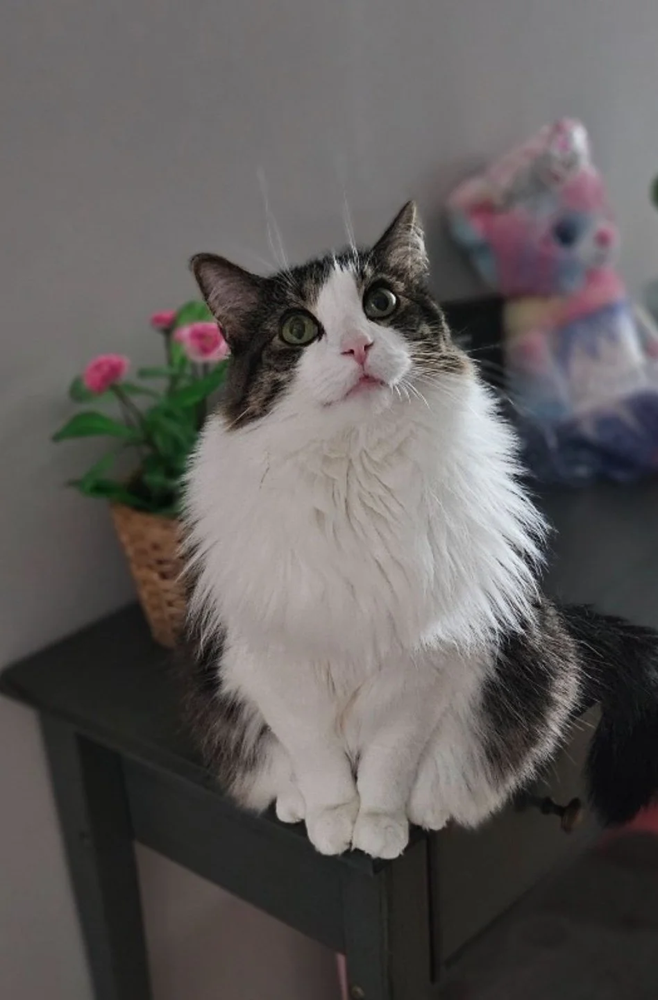

Director of bedroom-floor epics Age very small · Seoul
A voice that travelled
Seoul
The beginning — telling stories long before they could be a career
Chicago
The training — a B.A. in Theatre at Northwestern University
New York
The discovery — performer and playwright, then a door into voice over
Singapore
The connection — translator, interpreter and English teacher
Korea · now
The next chapter — every place and person carried into the booth
I wasn’t just playing. I was building entire universes.
Da Eun YoonThe Storytelling FairyKorean & English Voice Over Artist
It began with a cassette player, an audiobook, and a small bedroom in Korea. My mother hoped the tape would help me learn English. It did much more than that.
Jesse Bernstein’s voice reading Percy Jackson and the Lightning Thief came out of that little machine, and it opened a door — to a new language, to distant places, to worlds far bigger than my room.
The next morning my Barbie dolls, puppets and scraps of fabric became heroes and explorers. Blankets became kingdoms. My parents became my first audience.
Every place I have lived since has left something in my voice, and every language I have carried has changed how I listen.
✦ ⁂ ✦
✦Chapter Two · Off mic✦
Voice actor, and a very curious human.
Always trying something new, studying the way people think, or turning last night’s dream into a story.
Da Eun’s little gallery
Snippets of a vivid imagination — drawings, costumes, and the odd corner of a life lived out loud.








What fills the hours between takes
Stage & screenTheatre and acting, on and off camera
Drawing & animationIllustrating worlds in Procreate, then setting them moving
Art & costumeMaking things with her hands since the bedroom-floor days
TravelCollecting stories everywhere — despite the airplanes
Languages & instrumentsAlways another one part-learned
The human mindReading about why people are the way they are
An ongoing searchFor the perfect cup of hot chocolate
Moving pictures
Acting reelAn animation, built from her own drawings
✦Chapter Three · The professional✦
Playful spirit. Serious craft.
Curiosity may lead the way, but every performance is grounded in theatre training, disciplined preparation and a collaborative process.
Training
Where the craft was learned
B.A. in Theatre
Northwestern University
Voice over
Elizabeth Bunnell · Piper Goodeve · Emily Woo Zeller
Stage
David Catlin · Cindy Gold
Screen
Stephen Cone · Kim Plumridge
Speech & Shakespeare
Linda Gates
Voice · Mezzo-soprano
Nicole Benoit
Languages & accents
The tongues she keeps
English
Native
Korean · 한국어
Native
Mandarin · Spanish
Intermediate
Accents
Standard American · British RP · French · Korean · Chinese · and more
✦Bonus chapter · Esme’s corner✦

Esme · official booth critic
Every star needs a demanding agent.
My cat would like you to know she’s also accepting bookings. Her range? Mostly meows.
I’m five. I love tuna, cheese, cardboard boxes, and ignoring your calls. My rate? One 25g can of Fancy Feast tuna per hour. Serious meows only.Esme, feline voice talent
Fine printNo other cats in the booth. She has standards.✦
✦ ⁂ ✦
There is more, if you keep turning.
Three voice worlds wait on the other side of this leaf.